Zadovoljite Vaša čula najkvalitetnijom hranom i pićem u gradu.
Nakon duge šetnje, teškog posla, napornog dana, zaslužili ste predah, a
kako sebe drugačije nagraditi nego uživanjem u najboljim zalogajima i gutljajima, zato, prepustite se
hedonizmu i
ne žalite. Život ulepšavaju sitnice.
Novi Sad Vam nudi sve ono što Vam nedostaje!
Dobro došli!
RESTORANI
Bez obzira da li volite da jedete u luksuznom restoranu ili
u nekom opuštenom baru sa fantastičnom klopom,
nikada nije štetno znati gde možete pojesti ukusan obrok.
Da li je u pitanju poslovni ručak, romantična večera
ili samo obilno meze uz omiljeno piće u Novom Sadu ćete uvek pronaći
odgovarajuće mesto za to.
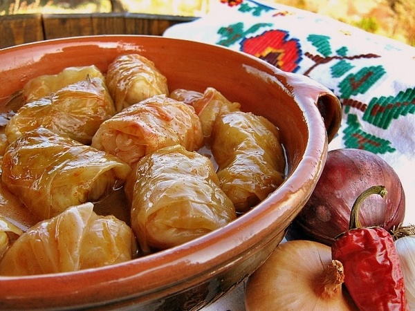
Nacionalni
Šta je ukusnije od domaće kuhinje?
Uživajte u sarmi, karađorđevoj šnicli, ćevapima, pihtijama, čvarcima itd.
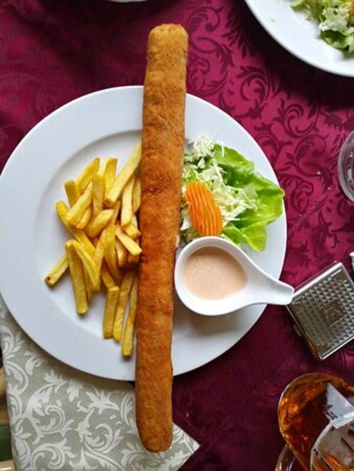
Ekspres
Žurite, a gladni ste? Najbolja opcija za Vas
jesu ekspres restorani koji nude kuvana jela
vrhunskog kvaliteta.
Internacionalni
Ukoliko volite nove ukuse i da eksperimentišete sa hranom,
svratite u najbolje internacionalne restorane.
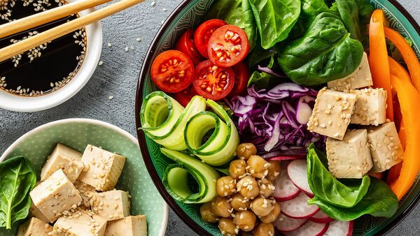
Veganski
Niste fan mesa i ostalih proizvoda životinjskog porekla? Onda su
veganski restorani pravi izbor za Vas.
PICERIJE / PEKARE / PALAČINKARNICE / STREET FOOD
Nemate dovoljno vremena za restorane? Nema problema, tu su pekare, street food, palačinkarnice, picerije itd.
Nećete ostati gladni.
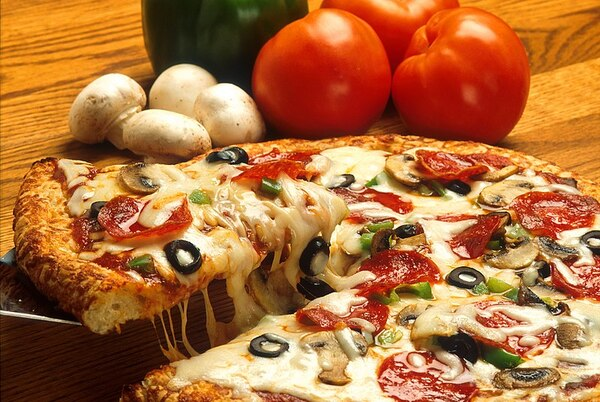
Picerije
Šta vam prvo padne na pamet kad ogladnite?
Možda pica? Isprobajte naše specijalitete koje nikoga ne ostavljaju ravnodušnim.
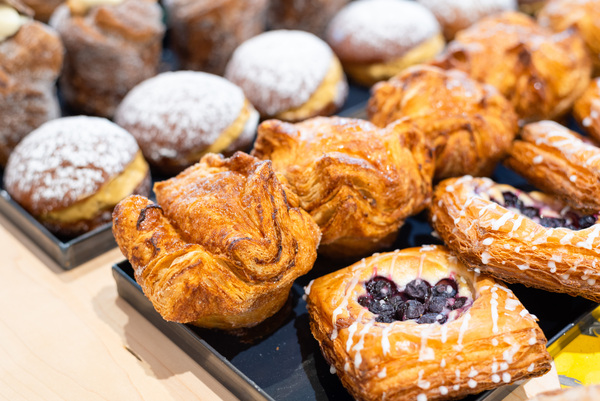
Pekare
Ima li lepšeg mirisa od sveže spremljenog hleba?
Dođite kod nas i probajte razne vrste peciva, slatkih proizvoda, bureka, sendviča.
Palačinkarnice
Mekana, topiva, satenski nežna, filovana po željama,
postala sam simbol mnogih detinjstava.
Dodaci su se stalno menjali, ali ja sam ostajala ista.
Slane ili slatke?
Sve po Vašem ukusu!
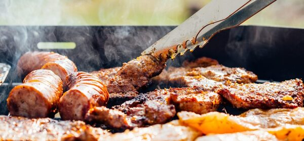
Street food
Svetski trend popularnosti takozvane ulične hrane sve je izraženiji i u Novom Sadu. Ponuda je najraznovrsnija: od burgera, salata, palačinaka, girosa, pita, roštilja…
POSLASTIČARNICE / KAFETERIJE
Ako se zaželite onog ukusa torti i kolača uz kafu, koji vas podseća na neka lepša I veselija,
bezbrižnija vremena, zaputite se kod nas. Čekamo Vas!
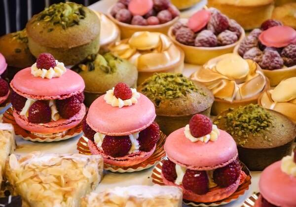
Slatko da sve ide glatko
Za one koji ne mogu zamisliti obrok bez dezerta, tu su
poslastičarnice koje nude domaće štrudle, gomboce, vanil krancle, knedle,
torte, krofne, sve što poželite.
Posetite nas i uživajte u slatkim zalogajima.
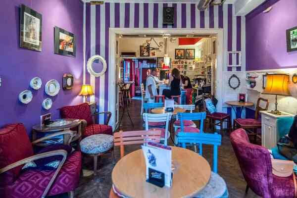
Kafica za balansiranje
Kafom započinjemo dan, zato, napravite pauzu
i opustite se uz miris i ukus moćnog napitka.
Mesta sa odličnim izborom kafe u našem gradu je sve više,
zato, ne čekajte i isprobajte različite vrste kafa.
PIVNICE / PABOVI
Kako bez piva?!
Za početak, možete obići neku od novosadskih kafana ili neku od pivnica.
Popularna mikropivara koja služi svoja kraft piva je “Brauhaus”,
gde se održavaju i žurke. Neobičnu uslugu možete dobiti u “PUBeraju”,
pabu koji je istovremeno i berbernica,
pa uz pivo možete sačekati svoj red za šišanje.
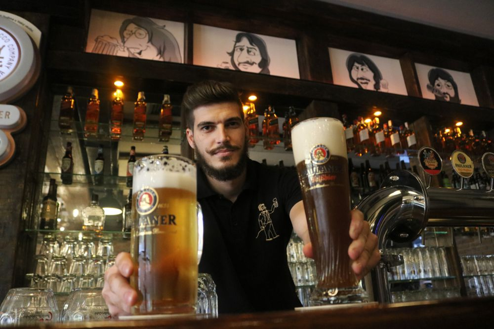
"NOVOSADSKI DANI PIVA"
4. i 5. novembar
Novosadski sajam
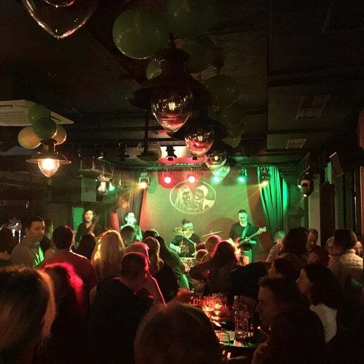
Muzika uživo
I ovog petka izdvojili smo za vas najzanimljivije iz ponude noćnog provoda Novog Sada.
Budući da vas u subotu očekuje jedan poseban spektakl,
ponuda ostalih lokala u Novom Sadu za taj dan nije
toliko raznovrsna kao za petak.
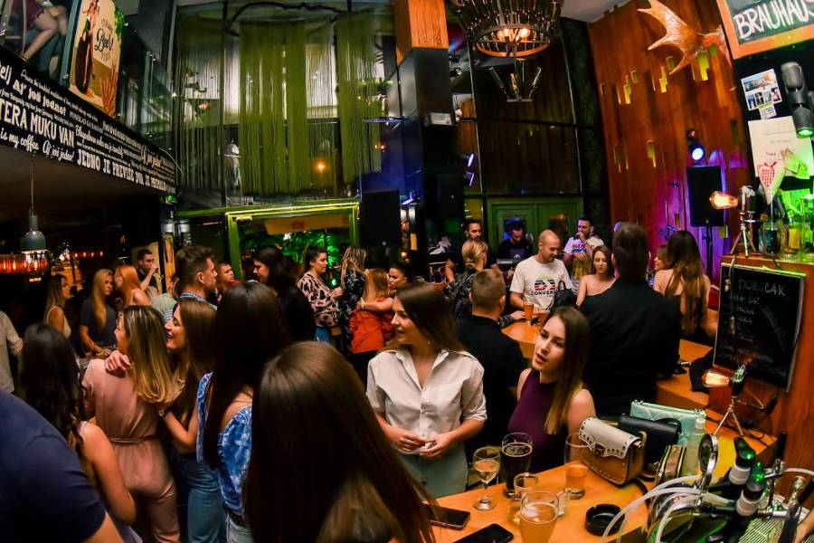
Tehno uz pivo
Vremenska prognoza najavljuje kišu i loše vreme,
ali to ne utiče na žurke koju se najavljene.
Pročitajte šta vas čeka predstojećeg vikenda u Novom Sadu, uz posebno iznenađenje za sve ljubitelje
tehno zvuka.
OSTALO...
Salaši, čarde i vinski putevi na obodu gradskog područja pružaju mogućnost za gastronomski užitak,
često kombinovan sa tradicionalnim, veselim seoskim svetkovinama.
U ambijentu karakterističnom za vojvođanska seoska domaćinstva u hladu voćnjaka,
uz tradicionalnu hranu i dobra vina, možete bar za trenutak usporiti vreme i uživati.
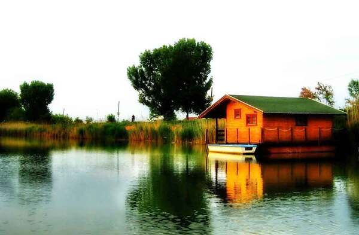
Čarde
Ako hoćete da ovog vikenda pobegnete od gradske buke i vreve,
da provedete dan na svežem vaduhu uz obalu reke,
da pritom i dobro jedete, pravo mesto za vas su čarde.
U krugu od 5 kilometara od centra Novog Sada su neki dobri
riblji restorani.
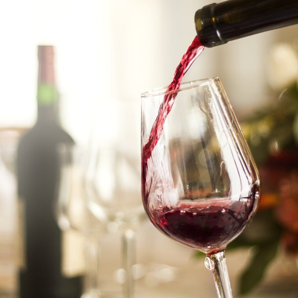
Vinarije/Vinoteke
"In vino veritas!" Savremeni sortiment za proizvodnju crvenih fruškogorskih vina čine:
merlo, probus, frankovka, portugizer, kaberne sovinjon, kaberne fran, pino crveni,
a za bela vina:
talijanski rizling, šardone, župljanka, sovinjon, traminac zatim neoplanta,
sila, rajnski rizling..
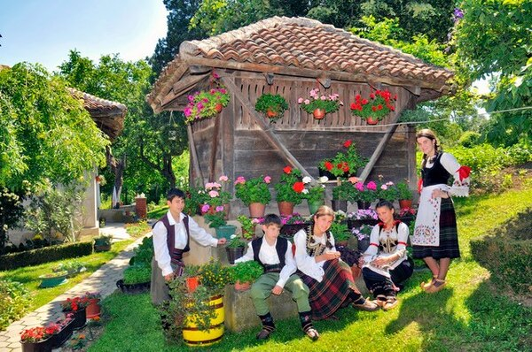
Salaši
Ukoliko želite tišinu i odmor,
salaši su izbor za vas.
Moći ćete da napunite svoje baterije i da
uživate u opuštenoj atmosferi i bogatoj ponudi raznih vojvođanskih
specijaliteta.